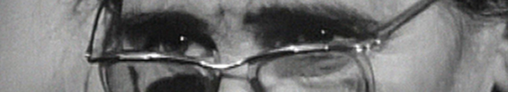

Genre littéraire associé à la versification et soumis à des règles prosodiques particulières, variables selon les cultures et les époques, mais tendant toujours à mettre en valeur le rythme, l'harmonie et les images. Comment la poésie touche à la musique par une prosodie dont les racines plongent plus avant dans l'âme humaine que ne l'indique aucune théorie classique (Baudel.,Fl. du Mal, 1867, notes, p.376).−Voici de la prose sur l'avenir de la poésie: −Toute poésie antique aboutit à la poésie grecque, Vie harmonieuse. −De la Grèce au mouvement romantique, −moyen âge −il y a des lettrés, des versificateurs. D'Ennius à Théroldus, de Théroldus à Casimir Delavigne, tout est prose rimée, un jeu, un avachissement et gloire d'innombrables générations idiotes: Racine est le pur, le fort, le grand (Rimbaud,OEuvres, Lettre à Demeny, 1969 [1871], p.345)

1. La poésie n'est pas le seul domaine où le symbolisme des sons fasse sentir ses effets, mais c'est une province où le lien entre son et sens, de latent, devient patent, et se manifeste de la manière la plus palpable et la plus intense, comme l'a noté Hymes dans sa stimulante communication. Une accumulation, supérieure à la fréquence moyenne, d'une certaine classe de phonèmes, ou l'assemblage contrastant de deux classes opposées, dans la texture phonique d'un vers, d'une strophe, d'un poème, joue le rôle d'un ,,courant sous-jacent de signification``... R. Jakobson,Essais de ling. gén., trad. par Ruwet, t.1, 1963, p.241.
− [Dont l'ambition est souvent d'ordre ontologique] La poésie, à sa plus haute puissance, est une intuition de l'infini: c'est Dieu aperçu dans la création, l'immuable destination de l'homme présentée au milieu des vicissitudes de l'histoire (Ozanam,Philos. Dante, 1838, p.78).La poésie est l'expression, par le langage humain ramené à son essentiel, du sens mystérieux des aspects de l'existence: elle doue ainsi d'authenticité notre séjour et constitue la seule tâche spirituelle (Mallarmé, Corresp., 1884, p.266):
2. La poésie se voulut expression d'une souffrance enfermée dans un cercle sans issue: dans le verbe, elle n'espère plus trouver le salut, mais seulement la possibilité de la nuance. Elle s'affirma comme la manifestation la plus haute et la plus pure de la création littéraire: elle entra pour sa part en opposition avec le reste de la littérature et, sans tenir compte d'aucune réserve, d'aucune limite, s'arrogea la liberté de dire tout ce que lui inspiraient une imagination impérieuse, une intériorité élargie aux mesures de l'inconscient et enfin un jeu dans une transcendance qui ne se réfère plus à rien. H. Friedrich,Struct. de la poés. mod., Paris, Denoël-Gonthier, 1976, p.17.